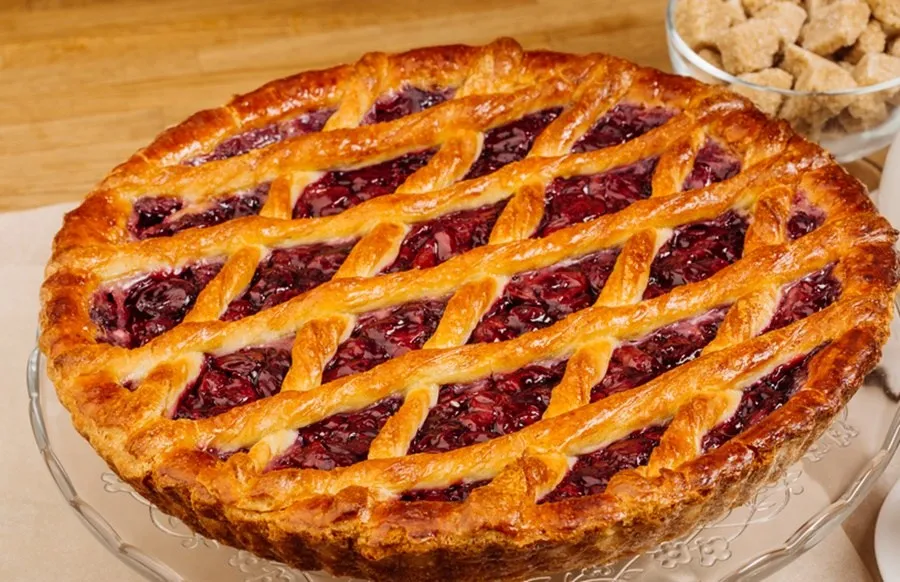

Pasta frola casera (pasos)
-
Cremar manteca y azúcar
-
Agregar ralladura de limón, el huevo y la esencia
-
Integrar la harina leudante
-
Formar un bollo tierno sin amasar con una espatula hasta quedar una masa blanda
-
Envolver en film y llevar a la heladera mínimo 2 horas
-
Espolvorear mesa y masa con harina
-
Con las 3/4 partes de masa estirar y forrar un molde de 26 cm de diámetro
-
Poner encima el dulce de membrillo. Previamente a pisarlo ponerlo en el microondas 1 minuto
-
Hacer el enrejado con la masa restante. Estirar la masa y cortar las tiras con una cuchilla. Pintar las tiras con huevo batido
-
Llevar a cocinar en horno 190° durante 25 minutos aproximadamente
-
Y listo, ya tenes tu pasta frola hecha 100% casera!